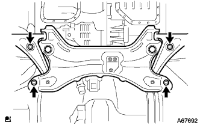

Partial engine ASSY installation |
| 1. Exhaust manifold installation |
 |
Tighten the exhaust manifold in the order of the figure via a new gasket.
| 2. Manihold support bracket installation |
With three bolts, attach a manifold support bracket.
| 3. Exhaust manifold Heat Insulator No.1 Installation |
With four bolts, attach the exhaust manifold heat insulator.
| 4. E.F.I. Water Tenpalacha Sensor Mounting |
Use SST to attach E.F.I .. Water Tenpalacha via a new gasket.
| 5. Knock control sensor installation |
Use SST to attach a knock control sensor.
| 6. Installation of engine oil pressure switching |
Apply 1324 adherive to the screw.
Use a deep socket wrench (24mm) to attach an oil pressure switch.
Connect a connector for oil pressure switch.
| 7. Mounting thermostat |
Attach a new gasket to the thermostat.
 |
Attach the thermostat with a ziggle valve on the upper side as shown in the figure.
| 8. Mounting a water inlet |
With two nuts, attach the water -inlet W / radiator outlet hose.
| 9. Water bypass pipe No.1 installation |
Put the water bypass pipe No.1 with two bolts and two nuts via a new gasket.
| 10. Installation of oil level gauge guide |
Apply the engine oil to the new O -ring and attach it to the oil level gauge guide.
Attach the oil level gauge guide with bolts.
Attach the oil level gauge.
| 11. Intake manifold installation |
Attach a new gasket to Intake Mani Hold.
 |
After temporary tightening the intake manifold in the order of the figure, tighten it with a specified torque.
Connect the wire harness to the intake mani -hold.
With two bolts, attach a vacuum tube for the brake booster.
| 12. Alternator Assorted |
 |
Temporarily attach the alternator with Bolt B.
 |
After tentatively attaching the fan belt agasting bar with bolt A and nuts, the alternator is reached to the cylinder block side to tighten the nut.
Attach a wire harness clamp.
Connect the connector.
Attach the+B terminal with a nut.
Attach the terminal cap.
| 13. Ignition coil No.1 installation |
Attach the No.1 ignition coil No.1 with bolts.
| 14. Drive plate & ring gear SUB-ASSY installation |
Use SST to fix the crankshaft Dampa.
Drive plate & ring gear installation
Clean the bolt and screw holes.
Apply Shib 1324 to the bolt to ad.
Tighten the bolt in the order of the figure.
| 15. Automatic Transxle ASSY installation |
Attach the automatic transxle to the engine and tighten the seven bolts in the figure.
Fix the crankshaft using SST.
 |
Attach the torque converter set bolt.
| 16. Starter ASSY installation |
Attach the starter ASSY with two bolts.
Connect the connector.
Attach 30 terminals with nuts.
Close the terminal kyatsup.
| 17. Front suspension cross member SUB-ASSY installation |
In the bolt, attach the engine mounting insulator RR and the engine mounting bracket RR.
| 18. Bane pump assertion |
Attach the vane pump ASSY with two bolts.
Connect the connector.
 |
Attach the vane pump V belt.
Adjust the tension of the V belt and tighten the bolt B for adjustment.
Tighten the fixing bolt A.
Check the tension of the vane pump V belt and the amount of deflection.
| 19. Installation of engine ASSY W/Transxle |
 |
Enter the engine assing W/Transxle and front suspension cross member on the engine lifter.
|  |
With four bolts, tentatively assembles the engine ASSY W/Transxle and front suspension cross member.
 |
With two bolts, attach the engine mounting insulator LH.
 |
Attach the engine insulator RH with 5 bolts and nuts.
 |
Insert the SST into the suspension cross member RH side and the vehicle RH side.
 |
Temporarily tighten in the order of bolt A and b.
Insert the SST into the suspension cross member RH side and the vehicle RH side and tighten with a specified torque.
 |
Insert the SST into the suspension cross member LH side and the vehicle LH side.
 |
Temporarily tighten in the order of bolt A and b.
Insert the SST into the suspension cross member LH side and the vehicle LH side and tighten with a specified torque.
| 20. Front drive shaft Assisted |
Apply the auto fluid type T-IV to the spline of the inboord joint Assy LH.
 |
The shaft spline is used, and the drive shaft Assemer is inserted using a brass bar and a hammer.
| 21. Front drive shaft Assisted |
| 22. Lonxle assess installation |
Press the front axle asser to the outside of the vehicle, and insert the drive shaft ASSY spline into the axle ASSY and insert it.
| 23. Installation of front axle ASSY RH |
| 24. Tie rod end sub-assy LH installation |
Attach the tie rod end to the steering knuckle and tighten with a castle nut.
Attach a new cottal pin.
| 25. Tie rod end sub-assy RH installation |
| 26. Front suspension Lower arm No.1 LH installation |
Attach it to the steering knuckle of the Lower Arm ASSY and tighten it with a castle nut.
Attach a new clip.
| 27. Front suspension Lower arm No.1 RH installation |
| 28. Stabilizer bar FR installation |
Attach 2 cushions retainer No. 1, 2 cushions and stabilizer bars in the direction of the figure, and tighten with a nut.
 |
Fix the stabilizer bolt with a spanner (10mm) and tighten a new nut.
| 29. Speed sensor FR LH installation |
In the bolt, attach the speed sensor wire and flexible hose to the shock absorber ASSY.
 |
Attach the critip to the shock absorber ASSY.
 |
Attach the speed sensor FR to the steering knuckle with bolts.
| 30. Speed sensor FR RH installation |
| 31. Front axle shaft nut LH installation |
Use a Soketsu trench (30mm) to attach a new hub nut.
 |
Use tagane and hammer to squeeze the nut.
| 32. Lonxle shaft nut RH installation |
| 33. Exhaust pipe ASSY FR installation |
Use caliper to measure the free length of the compression spring.
 |
A new gas ketto is used with a wooden piece and a hammer, and gradually drives to the exhaust manifold.
With two bolts, attach the exhaust pipe ASSY FR to the exhaust manifold.
| 34. Steering sliding York SUB-ASSY connection |
 |
Attach clip A and attach the hole cover and clip B to the body.
Match the matching mark and attach the sliding yoke with bolts.
 |
Remove the seat belt for the steering wheel rotation prevention.
| 35. Steering column hole cover plate installation |
Attach the hole cover plate with two clips.
| 36. Cooler compressors W/magnet clutch assessed |
With 4 bolts, attach the compressor ASSY.
Connect the connector.
| 37. Fan & Alternator V belt installation |
Attach a fan & alternator V belt.
 |
Use a hub nut wrench or bar to press the alternator to the vehicle front side to adjust the tension of the fan & alternator V belt.
 |
Tighten the adjustment bolt A and then tighten the fixing bolt B.
Check the tension and deflection amount of fan & alternator V belt.
| 38. Installation of engine wires |
Connect the engine wire to the engine control computer and junction block.
Attach the engine wire to the engine room J/B.
Attach the ground wire.
Attach the grab box.
| 39. Fuel tube SUB-ASSY connection |
Connect the Fuuelchu Uve.
| 40. Hita Water Hose Inlet A Connection |
Attach the clamp and connect the heater water inlet hose A.
| 41. Hita Water Hose Outlet A Connection |
Attach the clamp and connect the heater water outlet hose A.
| 42. Union toe check valve hose connection |
Connect the Union Tsu Uchi Check Valve Hose.
| 43. Column Shift Transmission Control Cable ASSY installation |
In the nut, temporarily attach the control cable to the control shaft lever.
With a new clip, fix the control cable to the bracket.
| 44. Accelerator control cable Assisted |
Attach the accelerator control cable ASSY.
| 45. Cylinder head cover No.2 installation |
 |
After tightening the nut A2, attach the nut B2 No.2 cylinder head cover.
| 46. Radiator Assisted |
Attach the Subradiator Support Kutsushion and Radiator Support LWR to the radiator associator.
 |
With two bolts, attach the waterfilla.
 |
With three bolts, attach a fansy loud W/fan.
Attach a radiator asser to the vehicle and connect the connector and wire harness clamp of the cooling Juan motor.
| 47. Radiator support SUB-ASSY UPR installation |
Attach the radiator support UPR with four bolts and one clip.
Connect the horn asser connector and clamp.
| 48. Food rock support brace installation |
Attach the bonnet (food) rock support brace with four bolts.
| 49. Food rock support SUB-ASSY installation |
Attach the bonnet (food) rock support with three bolts.
| 50. Food lock ASSY installation |
Connect the Bonnettorotsuku Control Cable ASSY to the Bonnettorotsuku ASSY.
 |
With three bolts, tentatively attach Bonnetro Tsuku ASSY.
| 51. Radiator grill W/radiator support seal UPR installation |
Assemble radiator grill and radiator support seal UPR.
 |
Combine the claws at the bottom of the radiator grill and attach the radiator grill W/radiator support seal UPR with 6 clips.
| 52. Installation of oil coollinelet hole |
Connect an oil cool line lettuce hose and attach a clamp.
| 53. Installation of oil cooler outlet hole |
Connect an oil cooler outlet hole and attach a clamp.
| 54. Radiator inlet hole installation |
Connect the radiator inlet hose and attach the clamp.
| 55. Radiator outlet hole installation |
Connect the radiator outlet hot and attach the clamp.
| 56. Air cleaner ASSY installation |
With 4 bolts, attach the air cleaner case W/Air Cleanine Let No.1 and No.2.
Attach the air cleaner filter element.
Attach the air cleaner cap W/Air Cleaner Hose No.1.
| 57. Battery installation |
Attach the battery tray.
Attach the battery.
Attach the battery clamp with bolts and nuts.
| 58. Leof tire installation |
| 59. |
| 60. Engine oil replenishment |
| 61. Cooling solution refill |
Close the radiator drain kotsuku plug and injection of cooling water until overflowing from the radiator injection.[ * 1]
Tighten the radiator kayatsu.
Inject the cooling solution into the radiator reserve tank to the upper limit.
Warm up the engine until the thermostatsu opens.
Stop the engine, wait for the cooling solution to cool, remove the radiator kyatsu and check the water level.
If the water level is lowered, repeat from [ * 1].
When the water level does not fall, adjust the cooling solution of the radiator reservoir battank.
| 62. Oil leak inspection |
| 63.Fuel leak inspection |
Confirm that there is no leak in the fuel system with the fuel pressure.
| 64. Cooling liquid leak inspection |
Fill the cooling solution and attach the tester.
137kPa {1.4kgf/cm2Put the pressure of｝ and confirm that there is no leak in each part.
| 65. Shift lever position inspection |
The shift lever shifts from N range to each range.At this time, the shift lever can be operated smoothly, moves moderately in each range, and confirms that the position indicator is displayed and the shift lever is matched.
Make sure that you can shift to each range of P, R, and L only when the shift lever is pulled to the front.
Start the engine and shift to the D range. The vehicle progresses forward, and when the R range is shifted, a buzzer sounds and the vehicle retreats.
| 66. Shift lever position adjustment |
Remove the nut of the control shaft lever and separate the control cable.
Turn the control shaft lever until it stops in the counterclockwise direction, and then return to the position (N range) in two steps.
 |
As shown in the figure, the shift lever is shifted to the N range, pressed against the R range side, attach the control cable and tighten with a nut.
After adjustment, check the operation condition and operation.
| 67. Engine Anda cover LH installation |
With two screws and two bolts, install the engine undercover LH.
| 68. Engine undercover RH installation |
With two screws and two bolts, install the engine undercover RH.
Tighten the nut.
| 69. Engine idol rotation inspection |
Inspection by TASCAN
Warm the engine.
Connect TASCAN to DLC3.
The operation is performed according to the screen instruction, the [ignition time inspection] screen is displayed, and the idol rotation speed is measured.
Inspection with a circular rotating meter of the primary current detection type
 |
The octopal snack wire No.2 is attached to the 9 (TAC) terminal of DLC3, connecting the rotating meter to measure the idle rotation speed.
| 70. Inspection of ignition timing |
Inspection by TASCAN
Warm the engine.
Connect TASCAN to DLS3.
Operate according to the screen display, and display the [ECU data monitor] screen.
Confirm that the ignition time is within the reference value.
When the engine rotation is raised, make sure that the ignition timing is quickly progressing.
The [Active Test] screen is displayed, and after the ignition time # 1 is selected, the measurement is performed in the TC terminal ON.
Inspection by general instrument
Warm the engine.
Remove the cylinder head cover No.2.
 |
Pull out the wire harness in the figure and connect the timing light clip to the wire harness.
 |
Use the diagnodes check wire No.2 to shorten the DLC3 13 (TC) ← → 4 (CG) terminal.
Confirm that the ignition time is within the reference value.
Open between 13 (TC) ← → 4 (CG) of DLC3.
Confirm that the ignition time is within the reference value.
When the engine speed is increased, make sure that the ignition timing is quickly progressing.
| 71. CO, HC concentration inspection |
Start the engine.
Racing for 180 seconds with 2500R/min.
Insert the tester probe into a tail pipe or more when the idle rotates.
Inspect CO and HC concentration.
If CO and HC are outside the reference value, do the procedure shown below.
Oxyzesensensen inspection
Trouble shooting with reference to the table below.
| child | HC | defect | Estimated cause |
|---|---|---|---|
| normal | expensive | Rough idol | 1. Ignition bad
3. Inspiration and exhaust gas 4. Cylinder compression |
| low | expensive | Raffeidle (HC unstable) | 1. Removable pressure
|
| expensive | expensive | Rough idol (black smoke) | 1. Air Element, that is 2.PCV valve, that is 3.Efi system bad
|
| 72. Front wheel alignment inspection / adjustment |
reference)| 73. Test mode inspection (speed sensor system) |
reference)